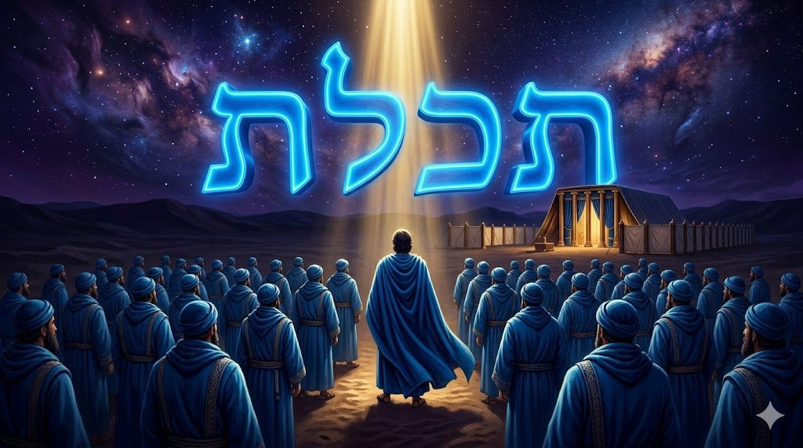
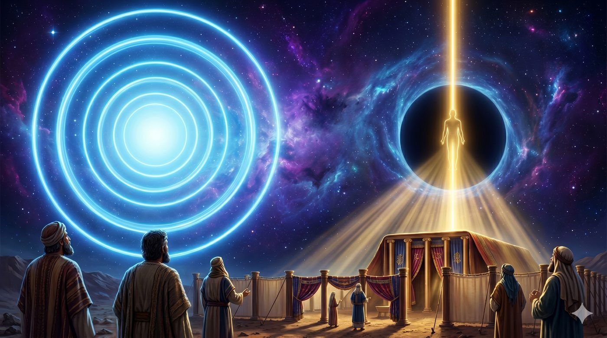
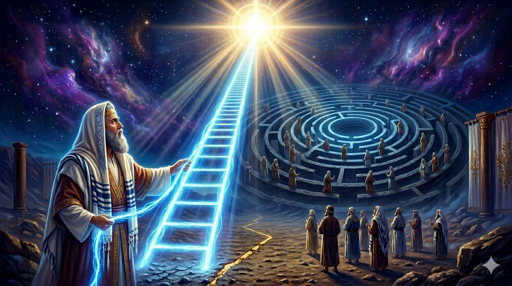
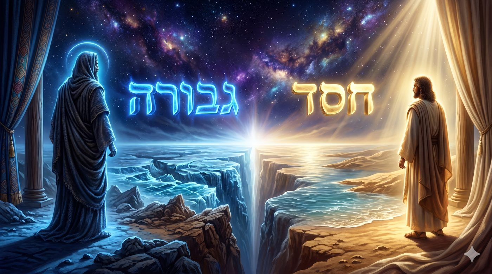
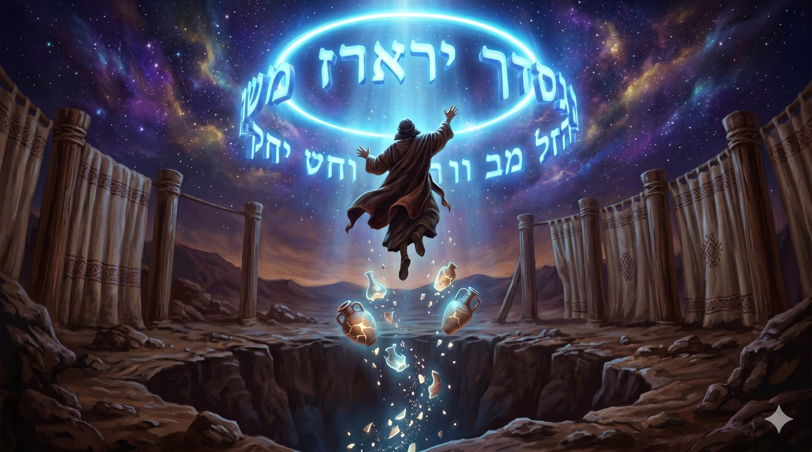
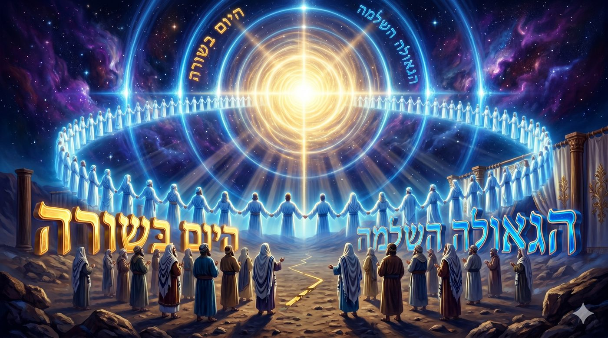

Le cercle qui voulait précéder la ligne
Kora'h, les Igoulim et le Yocher, ou pourquoi avoir raison trop tôt peut rendre coupable
Commençons par le récit, pour ceux qui ne le connaissent pas. Kora'h est un Lévi, cousin de Moché et d'Aharon, riche et respecté. Il prend la tête d'une révolte et entraîne avec lui Datan, Aviram et On fils de Pélet, de la tribu de Reouven, ainsi que deux cent cinquante chefs de la communauté, des hommes de renom. Ensemble ils se dressent contre Moché et Aharon et leur lancent ce reproche, « toute la communauté est sainte et D.ieu est au milieu d'elle, pourquoi donc vous élevez-vous au-dessus de l'assemblée ? ».
Moché propose une épreuve. Le lendemain matin, que chacun se présente avec un encensoir et de l'encens, et que D.ieu désigne celui qu'Il choisit. Le matin venu, la terre s'ouvre et engloutit Kora'h, Datan et Aviram avec leurs maisons, tandis qu'un feu consume les deux cent cinquante porteurs d'encens. Le peuple murmure encore, une plaie éclate, et Aharon l'arrête en courant au milieu des morts avec son encensoir. Pour clore définitivement la contestation, on dépose douze bâtons dans le sanctuaire, un par tribu, et seul celui d'Aharon fleurit et produit des amandes. La prêtrise d'Aharon est confirmée.
Voilà l'histoire telle qu'on la lit. C'est une querelle de pouvoir et de jalousie, et elle se termine par un châtiment. Mais sous cette querelle se cache une question beaucoup plus profonde, qui touche à la structure même du monde, et c'est elle que ce chiour va essayer de présenter. Car ce que Kora'h réclamait n'était pas seulement une fonction, c'était une certaine idée de la sainteté, une idée que la mystique juive nomme le cercle.
Avec l’aide du Ciel et de nos maîtres, nous verrons que Kora'h ne réclame pas le désordre mais le cercle parfait, un monde tout entier saint et tout entier bleu où la lumière encerclante toucherait chacun à égale distance du centre, ce qui est la vision des עִגּוּלִים / Igoulim/Cercles. Moché lui oppose le קַו / kav, la ligne qui ordonne et le fil unique qui sanctifie en désignant une direction. Nous verrons que la thèse de Kora'h n'est pas fausse, mais qu’elle est seulement prématurée, et c'est pourquoi Moché la renvoie d'un seul mot, בֹּקֶר / demain matin messianique, ce matin où le cercle, enfin, passera devant la ligne.
Avant le cercle, l'histoire
Le cercle que Kora'h a pris, sa thèse
Le cercle et la ligne, Igoulim et Yocher
Le cercle sans fil, pourquoi le kav demeure
Le cercle de la gvoura,
Le cercle daté trop tôt
Le cercle du matin, Kora'h tsadik le'atid lavo
Notre cercle intérieur, tenir sur Moché
Conclusion, quand le cercle sera réhabilité
La paracha s'ouvre sur un verbe sans complément, Vayikah Kora'h, « et Kora'h prit », car le verbe לקח est posé mais la Torah ne dit pas ce qu'il a pris. Le Midrach Tan'houma comble ce silence, car ce que Kora'h a pris est un manteau, tissé tout entier de cette laine couleur d'azur que la Torah nomme te'helet. Il en revêt ses deux cent cinquante hommes, puis il pose à Moché une question d'allure innocente. “Si un vêtement est entièrement bleu, réclame-t-il encore le fil bleu de te'helet des tsitsit ? Moché répond que oui, et la troupe éclate de rire, car si un seul fil suffit à rendre conforme un habit ordinaire, un habit fait entièrement de ce fil devrait l'être à plus forte raison.

Le manteau n'est pas un détail. Le te'helet est la couleur du sacerdoce et de la royauté, celle de la robe du Cohen Gadol et des vêtements de roi, de sorte qu'habiller deux cent cinquante hommes d'azur, c'est rendre une thèse visible. Kora'h affirme par le tissu ce qu'il dit par les mots, à savoir que si tous portent la couleur des prêtres et des rois, alors tous sont prêtres et rois, et qu'un tel peuple n'a plus besoin ni de grand-prêtre ni de chef. L'argument a sa force, car D.ieu lui-même a appelé Israël « un royaume de prêtres et une nation sainte », et Kora'h ne fait que tirer la conséquence littérale d'une promesse réelle.
Reste qu'il a pris une vérité pour en faire une arme. La phrase « toute la communauté est sainte » demeure vraie, mais posée au cœur d'une révolte, devant un peuple qui vient d'apprendre qu'il mourra au désert, elle ne sert plus à élever, mais à abaisser Moché. Et pour comprendre ce que Kora'h défend vraiment, il faut nommer la figure qui se cache derrière sa phrase, le cercle, car sur un cercle tous les points se tiennent à égale distance du centre, sans premier ni dernier, sans tête ni pieds.
Kora'h a vu le cercle, et il l'a vu juste, mais il a voulu l'habiter alors que le monde est encore réglé par la ligne.
D'où viennent ce cercle et cette ligne ? Le Ari Z”L ouvre son ouvrage majeur, le Ets Haïm sur un chapitre nommé Chaar Igoulim veYocher, la Porte des Cercles et de la Ligne, où tout débute par le tsimtsoum, ce retrait par lequel la lumière infinie, l'Or Ein Sof, se resserre pour laisser en son milieu un espace vide, un 'halal, où un monde fini pourra exister.
Dans ce creux descend ensuite une seule ligne de lumière venue de l'infini, un rayon mince que les maîtres nomment le kav.
De cette entrée naissent deux ordres. Tantôt la lumière s'organise en cercles concentriques, des sphères emboîtées les unes dans les autres, sans haut ni bas, et ce sont les Igoulim.
Tantôt elle s'organise en ligne droite, une structure verticale qui a la forme d'un homme debout, avec une tête et des membres reliés selon un ordre de fonctions, et c'est le Yocher. Les Igoulim ont leur racine dans le grand cercle d'avant le tsimtsoum, dans la lumière qui entoure tout, le sovev kol almin, qui environne les mondes sans entrer en eux. Le Yocher a sa racine dans le kav, le memale kol almin, la lumière qui remplit chaque monde à la mesure de ce qu'il peut contenir.

Un point est décisif pour la suite.
Les Igoulim appartiennent au monde du Tohou, du chaos, que nous avons déjà présenté, où les lumières étaient trop fortes pour des receptacles trop faibles, si bien que ces receptacles se sont brisés, tandis que le Yocher appartient au monde du Tikoun, la réparation, où les lumières furent dosées et les récipients ordonnés pour tenir.
Le cercle porte donc des lumières plus hautes mais (si on peut dire…) inadaptées à ce monde, et la ligne des lumières plus mesurées mais stables.
Le manteau tout en azur, c'est le cercle, l'Igoul de l'encerclant, et le fil unique du tsitsit, c'est la ligne, le kav qui sanctifie en désignant une direction.
La réponse de Moché, que Kora'h jugeait absurde, devient alors logique. Si le manteau tout en azur réclame encore son fil de te'helet, c'est que dans le monde du Tikoun, où nous vivons, la sainteté se transmet par la ligne et non par le cercle. Un manteau entièrement bleu mais privé de tsitsit n'est qu'un beau manteau bleu, porteur de la couleur de l'encerclant mais dépourvu du kav qui ferait descendre cette sainteté dans la structure pour la rendre agissante.
Le Rav Avraham Yits'hak HaCohen Kook l'a bien dit, en comparant le rôle des mitsvot dans une vie à celui des tsitsit sur un vêtement. Ce n'est pas le fil qui est saint, c'est le vêtement, mais sans le fil nous ne saurions pas que le vêtement l'est. Le fil rend la sainteté visible et active.
Et ce que Kora'h ne supporte pas tient à la nature de ce fil, car un fil est une ligne, il a une direction, un haut et un bas, et le fil de te'helet, tout en pendant vers le sol, oriente le regard vers le ciel et enseigne qu'on s'élève par étapes, là où le cercle supprime toute montée, puisqu'on y tourne sans jamais gravir.

C'est pour cette raison que le monde présent fut bâti en Yocher et non en Igoulim, non pas que D.ieu préfère la hiérarchie, mais parce qu'une lumière encerclante donnée d'un seul coup briserait les récipients, comme elle les a brisés au Tohou.
Le manteau tout bleu n'enlève pas le besoin du fil, car c'est la ligne qui tient le monde tant qu'il n'est pas mûr.
Le cercle et la ligne ont un nom dans le langage des forces, et c'est le Zohar qui le donne. Sur l'arbre des sefirot, le côté droit est celui du 'hessed, l'amour qui se donne, et le côté gauche celui de la gvoura, la rigueur qui retient et qui sépare. Le Zohar enseigne qu'Aharon appartient au côté droit, le 'hessed, et que les Léviim, dont Kora'h est issu, relèvent du côté gauche, la gvoura, de sorte que Kora'h est un homme du din, de la rigueur qui tranche et divise. Sa faute se précise. Kora'h veut échanger la gauche pour la droite, faire passer la gvoura au-dessus du 'hessed, donner aux Léviim la prêtrise qui revient aux Cohanim. Le Zohar avertit que celui qui, dans le temps présent, inverse ainsi la gauche et la droite détruit le monde, car l'ordre du Tikoun veut que le 'hessed précède et que la rigueur suive (ce point est notamment applicable lorsque l’on fait Netilat Yadaim, on doit commencer par la main droite).
Les maîtres ajoutent que ce récit rejoue le deuxième jour de la Création, le jour de la séparation des eaux, le seul où la Torah s'abstient de dire qu’il est tov , parce que c'est le jour de la gvoura et de la division. Le Midrach dit d'ailleurs que Kora'h était « tout te'helet », c'est-à-dire toute gvoura, le bleu sombre étant la couleur de la rigueur.

Le lien avec le cercle se referme ici, car la gvoura, la rigueur qui retient, et qui est à l’origine du tsimtsoum de la Création, c’est la force qui domine dans les Igoulim et dans le monde du Tohou, ces lumières trop hautes qui ont brisé leurs récipients. Kora'h n'est pas un simple envieux, il est la gvoura du commencement qui veut prendre la première place avant son heure.
Ce rapprochement entre Kora'h et le cercle est appronfondi par Rabbi Tsadok HaCohen de Lublin, dans son Pri Tsadik sur la paracha, qui lit la révolte à travers cette polarité et l'attribue explicitement au Ari Z”l. Le Ari, écrit-il, distingue deux manières de regarder une communauté, la manière droite, en ligne, le yachar, et la manière circulaire, les igoulim. La ligne classe les hommes selon qu'ils avancent vite, lentement ou à peine, alors que le cercle les tient tous à égale distance du centre.
Rabbi Tsadok montre ensuite que le cercle est la forme réservée au monde à venir, et il s'appuie sur le Talmud, qui enseigne à la fin du traité Taanit qu'à la fin des temps D.ieu fera une ronde, un ma'hol, pour les justes au jardin d'Éden, qu'Il siégera au milieu d'eux, et que chacun Le désignera du doigt. Une ronde est un cercle, et les justes n'y seront plus alignés en file devant un trône lointain, mais disposés en couronne dont chaque point touche également le centre. Le cercle est la forme de la fin de l'histoire, pas celle du présent. De là se dégage la véritable thèse de Kora'h. Il a considéré que le Sinaï avait déjà ouvert cette ère du cercle, que la révélation avait changé les hommes et clos le temps de la ligne, car si le monde est devenu cercle, alors le fil unique est inutile, le manteau tout bleu se suffit, et les commandements qui rapprochent du centre n'ont plus de raison d'être puisque tous le touchent déjà. Son erreur ne porte pas sur le cercle, elle porte sur la date, car le peuple n'était pas sorti de la ligne, il allait servir le Veau d'or et refuser de monter en terre promise. Kora'h n'a pas inventé le cercle, il l'a daté trop tôt.
Le verset central est la réponse de Moché. Quand Kora'h et sa troupe se dressent, Moché ne répond pas par un argument, il tombe sur sa face puis il dit, Boker veyoda Hachem et acher lo, « Au matin, D.ieu fera connaître qui est à Lui ». Il ne réfute pas Kora'h mais le renvoie au matin. Au sens simple c'est un délai, mais les maîtres lisent dans ce boker l'aube de la délivrance, car la nuit figure l'exil et le monde du Tikoun inachevé, et le matin figure le monde réparé où la lumière encerclante se révélera enfin.
Le Ari Z”l donne ici la clé la plus forte. Dans le Chaar HaGilgoulim, il enseigne que l'ordre actuel s'inversera à la fin des temps, car aujourd'hui la gvoura est sous le 'hessed, et donc le Lévi sous le Cohen, mais lorsque le monde s'élèvera, les rigueurs-gvourot monteront au-dessus des bontés-'hassadim, la racine de Kayin1 passera devant celle de Hevel, et les Léviim d'aujourd'hui deviendront les Cohanim de demain. Le « boker » de Moché se comprend alors ainsi, Kora'h le Lévi réclamant la prêtrise et Moché lui répondant « au matin », c'est-à-dire que sa demande sera satisfaite, mais pas cette nuit, puisque c’est au matin que la gauche passera à droite, le Lévi sera Cohen, et son manteau tout bleu sera validé parce que le monde sera devenu cercle.
Le Talmud confirme que rien n'est perdu, car dans le traité Sanhedrin, à la question de savoir si la troupe engloutie l'est pour toujours, Rabbi Eliézer répond, en s'appuyant sur le cantique de 'Hanna, « D.ieu fait descendre au Cheol et fait remonter », qu'elle remontera. L'engloutissement est un report, pas une condamnation. Toute la faute de Kora'h tient donc dans un écart de temps, car sa vision n'est pas une erreur sur le but mais sur le moment, lui qui a vu le matin et a voulu l'installer en pleine nuit.

Moché ne dit pas non à Kora'h, il lui dit, au matin la gauche passera à droite, et alors tu auras raison.
Cette histoire n'est pas seulement la sienne, car le Kora'h qui veut le cercle trop tôt est une part de nous. C'est l'attitude de celui qui voit juste et ne supporte pas que le monde tarde, et c'est toujours celui qui a raison qui s'impatiente, parce qu'avoir raison lui semble une raison suffisante d'imposer sa vision tout de suite. La tradition appelle cette précipitation דּוֹחֵק אֶת הַקֵּץ, do'hek et ha-ketz, « forcer la venue du terme ». Les fils d'Éphraïm en sont l'exemple, eux qui, d'après le traité Sanhedrin, se trompèrent dans le décompte des quatre cents ans de l'exil et sortirent d'Égypte trente ans trop tôt, pour mourir dans le désert. Ils avaient l'intuition juste d'une délivrance à venir, mais ils sont partis avant l'heure, et leur hâte les a perdus.
La réponse hassidique n'est pas de renoncer au cercle, mais de tenir sur Moché. Tenir sur Moché, c'est garder la ligne tant que dure la nuit, accepter les degrés, les mitsvot, la patience d'une montée par étapes, sans cesser pour autant de désirer le matin. C'est ce qu'ont fait les fils de Kora'h, qui ne moururent pas, car au bord du gouffre une pensée de Techouva s'éveilla en eux, et de là ils dirent un chant, ces psaumes des Tehilim qui portent encore leur nom. La Gvoura du père voulait s'imposer par la force, la même gvoura chez les fils est devenue chant, et le chant est la juste manière d'attendre, car il n'arrache pas le matin, il l'appelle.
Voilà le travail intérieur que la paracha nous demande. Reconnaître en nous le Kora'h qui veut tout, tout de suite, et choisir Moché, qui sait attendre sans renoncer. Le Kora'h en nous voit le matin et veut le saisir, le Moché en nous voit le même matin et accepte de le mériter par la nuit.
Il reste à dire ce que sera ce matin, et ici Kora'h avait raison plus encore qu'on ne le croit. Le Talmud enseigne dans le traité Niddah, au nom de Rav Yossef, que « les mitsvot seront abolies dans le temps à venir », mitsvot betelot le'atid lavo. Pourquoi seraient-elles abolies ? Parce que la mitsva est le fil, le kav, l'instrument de la ligne, fait pour rapprocher du centre celui qui en est encore loin. Le jour où tous toucheront le centre, le fil aura accompli son œuvre et tombera. Ce que Kora'h disait du manteau, qu'un vêtement tout bleu n'a plus besoin de fil, sera vrai du monde entier, mais seulement au matin. Et que restera-t-il quand le fil tombera ? La délectation.
Le Talmud décrit dans le traité Bera’hot le monde à venir, où il n'y a ni manger, ni boire, ni négoce, ni reproduction, mais où les justes sont assis, leurs couronnes sur la tête, se délectant du rayonnement de la Cheh’ina. Le mot mérite qu'on s'y arrête, car une couronne, atara, est un cercle. Au matin, chacun portera son cercle sur la tête, et la lumière encerclante que Kora'h voulait saisir trop tôt sera devenue la délectation de tous. Le cercle ne sera pas aboli, il sera réhabilité, et le manteau tout en azur que Kora'h avait taillé avant l'heure deviendra le vêtement du monde.
Trois attitudes se tiennent donc devant nous. Kora'h a voulu le cercle cette nuit, et la terre l'a englouti. Moché tient la ligne et dit « demain », parce qu'il aime le peuple et sait qu'une lumière donnée trop tôt brise celui qui la reçoit. Les fils de Kora'h, eux, chantent au bord du gouffre, fidèles au cercle mais sans le forcer.
À nous de tenir sur Moché en attendant le matin, de garder le fil tant qu'il faut, et de désirer le jour où les mitsvot tomberont pour laisser place à la délectation de l'Éternel.

| וַיְדַבֵּר אֶל קֹרַח וְאֶל כָּל עֲדָתוֹ לֵאמֹר | Il parla à Kora'h et à toute sa troupe en ces termes |
|---|---|
| בֹּקֶר וְיֹדַע ה' אֶת אֲשֶׁר לוֹ | Au matin, D.ieu fera connaître qui est à Lui |
| וְאֶת הַקָּדוֹשׁ וְהִקְרִיב אֵלָיו | et qui est saint, et Il le fera approcher de Lui |
| וְאֵת אֲשֶׁר יִבְחַר בּוֹ יַקְרִיב אֵלָיו | et celui qu'Il choisira, Il le fera approcher de Lui |
(Bamidbar 16:5)
Ye-hi Ratson — Que ce soit la volonté du Ciel
Que nous puissions tenir sur Moché et garder le fil des mitsvots, jusqu'au jour où la gauche passera à droite, où les mitsvot laisseront place à la délectation, et où le monde tout entier sera d'azur.
Chabbat Chalom !
Par B.A., à Saint-Mandé, 29 Sivan 5786 / 14 juin 2026
| Torah | Talmud |
|---|---|
| Bamidbar 16, le récit de la révolte ; 16:3 "toute la communauté est sainte" ; 16:5 "boker" | Taanit 31a, le ma'hol des justes ; Niddah 61b, les mitsvot abolies au futur |
| Bamidbar 15:38-40, le fil de te'helet ; Tehilim 78:9, les fils d'Éfraïm | Sanhedrin 110a, la remontée de la troupe ; Berakhot 17a, la délectation des justes |
| Mystique | Hassidout |
| Zohar III Kora'h, Kora'h du côté de la gvoura ; Ets Haïm, Chaar Igoulim veYocher | Pri Tsadik (Rav Tsadok de Lublin), Kora'h et le cercle, au nom de l'Arizal |
| Arizal, Chaar HaGilgoulim 35, les Léviim Cohanim au futur | Le Kotzker, Kora'h "notre saint grand-père" ; "Nekeva tesovev gaver" |
Le Ari Z’’L précise que Kora’h « a pris » le mauvais d’une partie de l’âme de Kain (qui provient des Gvourot) pour l’opposer aux bontés (les Hassadims) de Hevel, dont Moché est la réincarnation.↩︎